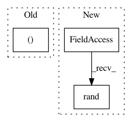

9d15c9611570bd3ecab52ed924c69a60ac3b2784,tests/keras/layers/test_convolutional.py,,test_upsampling_2d,#,185
Before Change
input_nb_row = 11
input_nb_col = 12
input = np.ones((nb_samples, stack_size, input_nb_row, input_nb_col))
for length_row in [2, 3, 9]:
for length_col in [2, 3, 9]:
After Change
for dim_ordering in ["th", "tf"]:
if dim_ordering == "th":
input = np.random.rand(nb_samples, stack_size, input_nb_row,
input_nb_col)
else: // tf
input = np.random.rand(nb_samples, input_nb_row, input_nb_col,
stack_size)
In pattern: SUPERPATTERN
Frequency: 3
Non-data size: 3
Instances
Project Name: keras-team/keras
Commit Name: 9d15c9611570bd3ecab52ed924c69a60ac3b2784
Time: 2016-01-03
Author: julien@fhtagn.net
File Name: tests/keras/layers/test_convolutional.py
Class Name:
Method Name: test_upsampling_2d
Project Name: keras-team/autokeras
Commit Name: 736ba6c6873290fdae110395040f76ba7ab0ff19
Time: 2017-12-17
Author: wangtaoo665@gmail.com
File Name: tests/test_net_transformer.py
Class Name:
Method Name: test_net_transformer
Project Name: keras-team/keras
Commit Name: 1d2ad790dd43a2d702176c1170b2f3fd592a385a
Time: 2018-01-30
Author: myutwo150@users.noreply.github.com
File Name: tests/keras/layers/wrappers_test.py
Class Name:
Method Name: test_Bidirectional_state_reuse